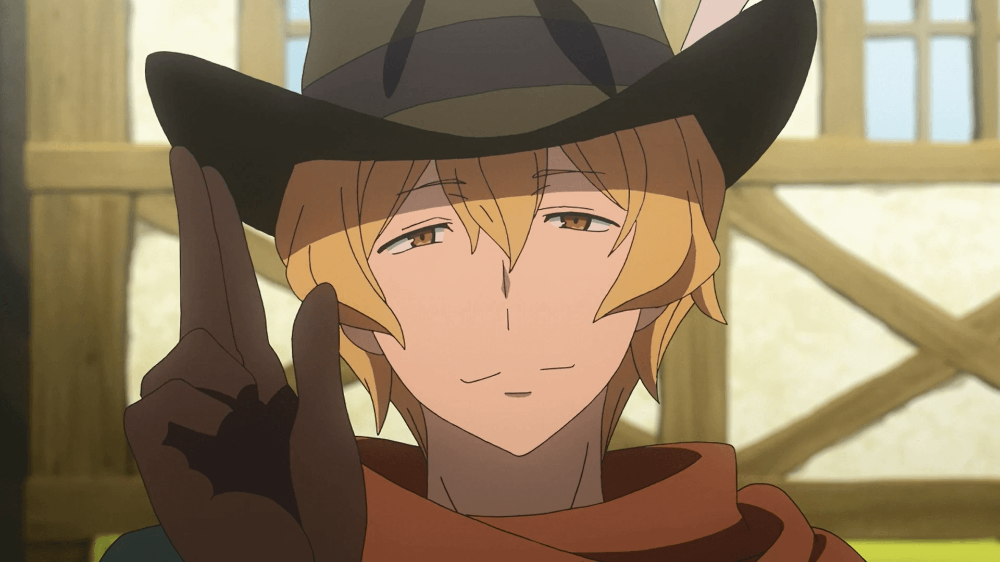
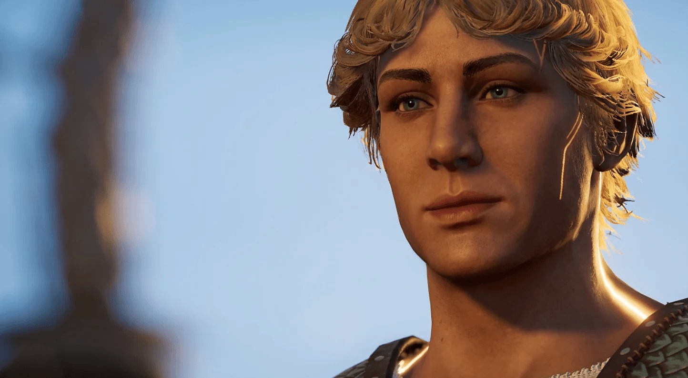
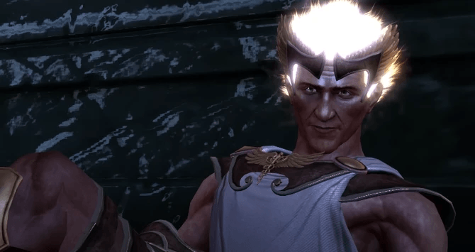
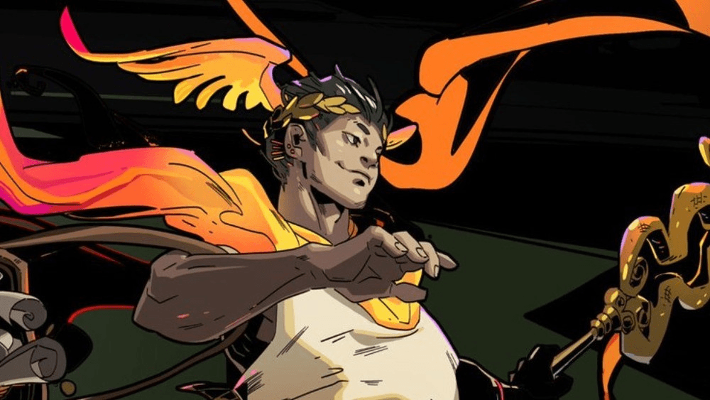
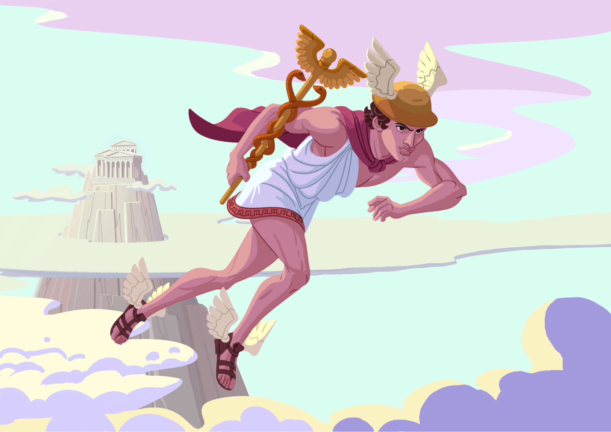
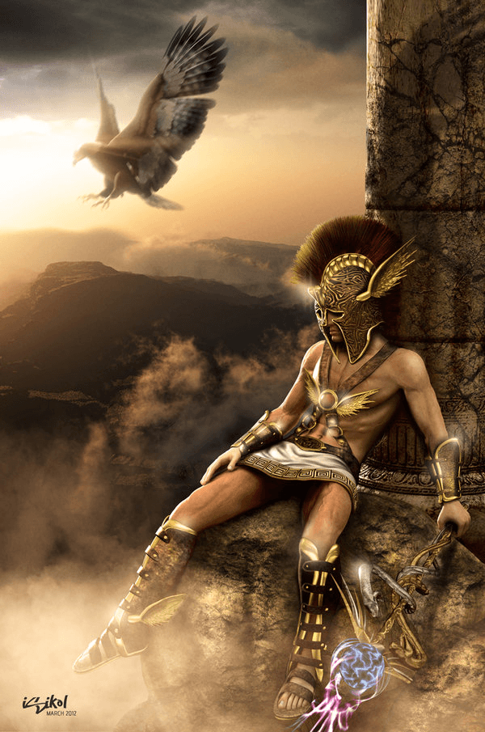
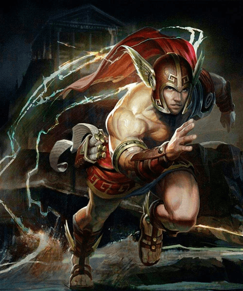
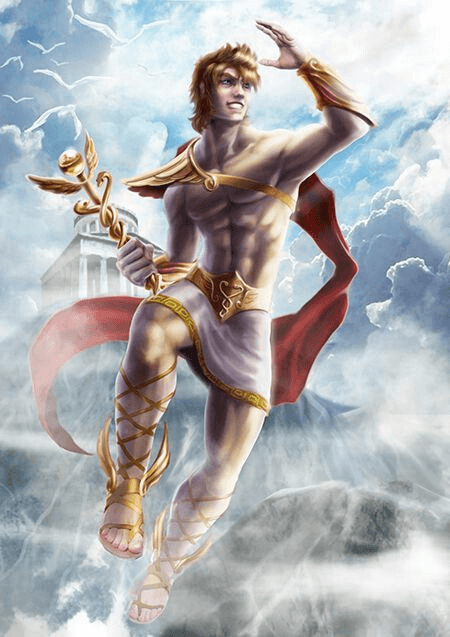

Você já ouviu falar dos nomes Hades, Poseidon, Zeus, Atena e Ares em algum lugar? Talvez jogando God of War ou Assasin’s Creed Odyssey, você provavelmente já ouviu falar de algum desses e já se perguntou qual é a origem.
É aí que entra a famosa Mitologia Grega, a origem de todos personagens nesses jogos. A mitologia grega já existe há muito tempo, tendo origem aproximadamente entre 3.000 e 1.100 a.C, e ela foi o conjunto de mitos e crenças que existia na religiosidade e cultura dos gregos antigos. Cada deus era associado à um elemento. Vamos dar uma olhada agora no deus Hermes.
Hermes é filho de Zeus e Maia. Ele é o deus dos viajantes, dos ladrões, do comércio, da comunicação, e também é conhecido por ser o mensageiro dos deuses.
O nome Hermes significa “marcador de fronteira” sendo que uma de suas funções era guiar os mortos para o submundo, o reino de Hades. Pelo seu papel de mensageiro e de guardião daqueles que vão ao submundo, Hermes também é chamado de deus dos viajantes e protetor das estradas.
Os elementos mais icônicos de sua representação incluem: Caduceu (bastão entrelaçado por duas serpentes), sandálias aladas e pétaso (chapéu de abas largas com asas).
Características e poderes:
PEREIRA, Lucas. Hermes: o mensageiro dos deuses na mitologia grega. Toda Matéria, [s.d.]. Disponível em: https://www.todamateria.com.br/deus-hermes/. Acesso em: 23 mai. 2026
A mitologia grega, apesar de sua idade, é extremamente popular e reconhecida atualmente, estando presente em diversos lugares, como videogames, filmes, séries e chega até a inspirar outras obras.
Hermes está presente em diversas obras, principalmente no mundo dos videogames, como: God of War III, Hades, Assassin's Creed Odyssey, Immortals Fenyx Rising, entre outros.
Ele também está presente em filmes, séries e animes, como: Percy Jackson e os Olimpianos, Kaos, Fúria de Titãs, O sangue de Zeus, DanMachi (Is It Wrong to Try to Pick Up Girls in a Dungeon?), etc.
Hermes é retratado de maneira diferente em cada obra, dependendo da perspectiva do autor. No mito, Hermes é representado como mensageiro dos deuses, astuto, ligado ao comércio e viagens. Em God of War III, ele é caracterizado por uma personalidade mais arrogante e trágica. Em Hades, é visto como rápido, carismático, e ajuda o jogador com bônus de velocidade.
Assim, Hermes continua sendo uma figura importante na cultura atual, sendo constantemente interpretado de uma nova maneira. Apesar das suas mudanças de personalidade, suas características principais como inteligência, velocidade e astúcia continuam presentes nas adaptações modernas.







